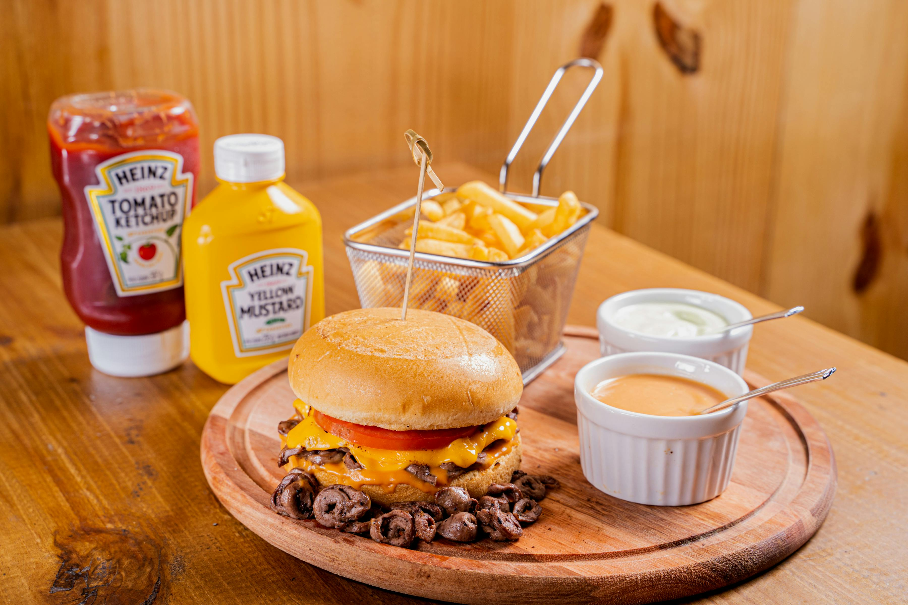
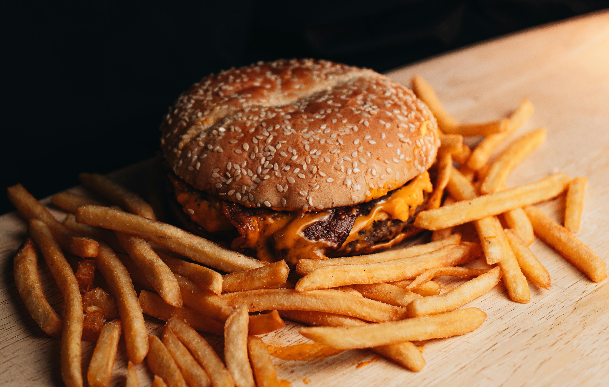
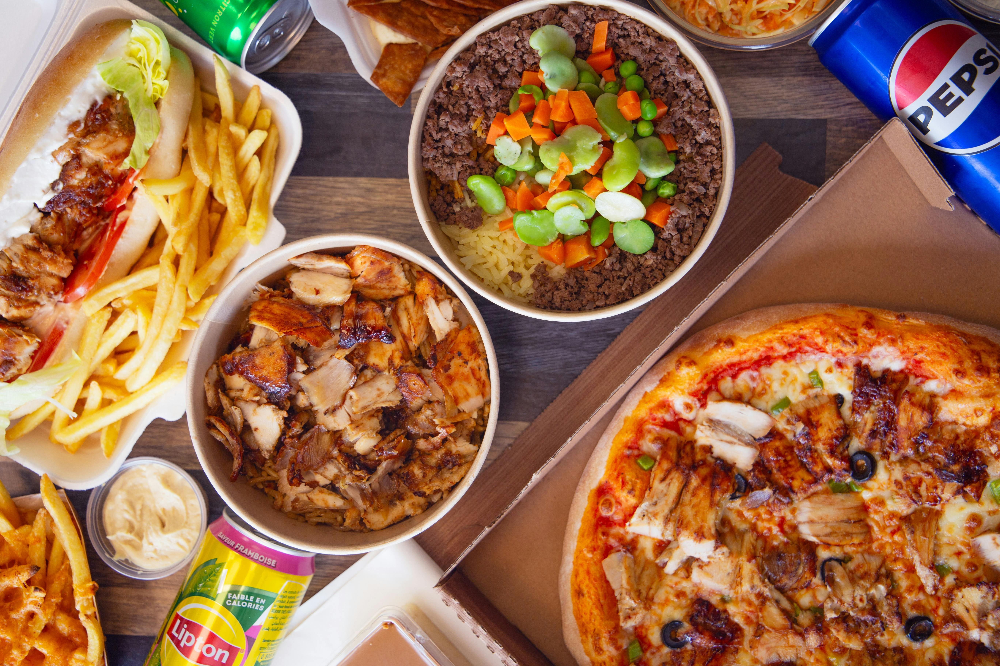

Street Food
Burgers, tacos y lo mejor del sabor callejero internacional.
Vive una experiencia única con comida, música y luces en las ciudades más vibrantes del Caribe.
| Fecha | Ciudad | Horario | Atracción |
|---|---|---|---|
| 12 May | Barranquilla | 6:00 PM | Street Food Show |
| 19 May | Cartagena | 7:00 PM | Live Cooking |
| 26 May | Santa Marta | 5:30 PM | Dessert Contest |
Ruta Nocturna del Sabor es una experiencia gastronómica única que reúne lo mejor de la comida, la música y la cultura en un ambiente vibrante bajo las estrellas.

Explora nuestras zonas gastronómicas y vive una experiencia llena de sabor.
Burgers, tacos y lo mejor del sabor callejero internacional.
Cortes a la parrilla, ahumados y sabores intensos.
Postres y experiencias dulces.
Cócteles y bebidas artesanales.
Vive el ambiente del festival a través de imágenes llenas de sabor.


